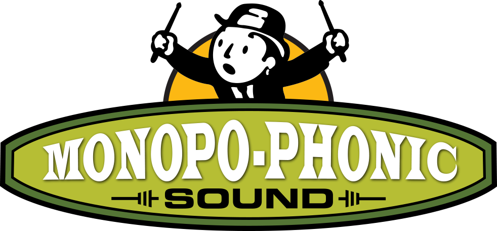

Music is my passion.
Whether I’m working with a young band helping to craft their first recording, writing a song for a television show, or playing drums in front of an audience — that passion is what drives me.
I love every aspect of what I do, but mostly I love the spirit of collaboration that can only be found between musicians. It’s evident in my approach to the albums I produce, it’s present in the songs I’ve co-written, and it’s most certainly visible in the smiles of the musicians on stage with me.
On this site you’ll find examples of my work. Please follow the links to my social media pages.
Thank you for watching and listening! — Flavio